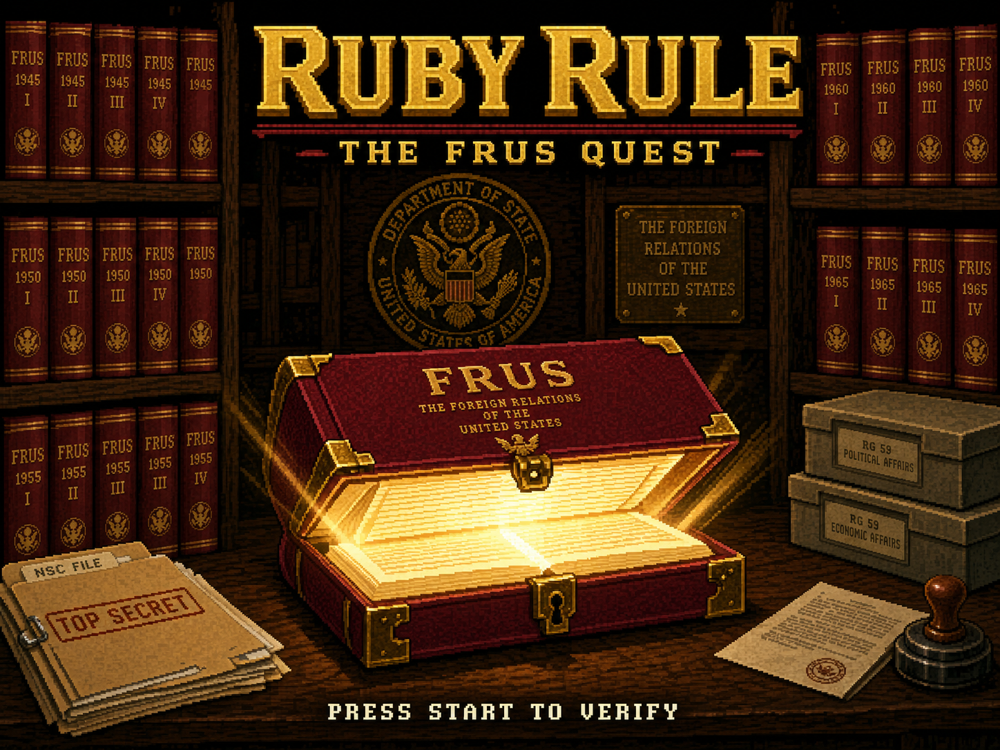

Ruby Rule: The FRUS Quest
Compile a FRUS volume. Explore archives and presidential libraries. Outsmart DANN-E before he derails your research.
Play the gamePlay in your browser on iPhone or desktop.

Compile a FRUS volume. Explore archives and presidential libraries. Outsmart DANN-E before he derails your research.
Play the gamePlay in your browser on iPhone or desktop.